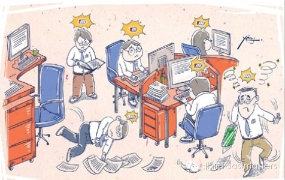
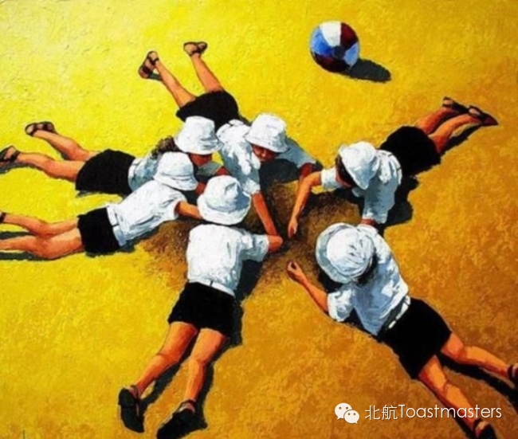
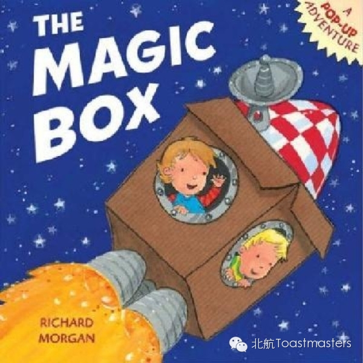

Workplace freshman
Time: 19:30-21:30, Friday, Nov. 21th
Venue: Room A209, New Main Building, Beihang University

Toastmaster: Veronica
Table Topic Master: Lucia
Yay！Beihang Toastmasters is coming again! Tonight we will talk about the awkwardness when we just step into work and how to face it and conquer it eventually. So have you ever feel not sure what you are dealing with at all when doing your first intership? Have you ever made mistakes when updated with your boss? Or have you ever have no idea what to talk about with your coworkers? Come here and join us in the 79th Beihang Toastmasters to share your experience and solutions with us! Our Table Topic Master, smart and pretty Lucia, will put on an amazing show waiting for you! Move your butt already!!
Prepared Speech
Where Has I gone
CC1 Grace

When we were kids, we used to think that the world was a paradise full of peace and joy, we somply enjoy everything aroung us. Have you ever missed the naive yourself when you were a kid? Have you ever thought about going back to childhood or younger you would be awesome? Let's hear Grace's thought! Go icebreaker!
Prepared Speech
Magic
CC2 Joshua

It's time to witness the magic! This has become popular for a while. Sometimes all you need is a blank then magic just shows up. In the show or in our life, it's not important it has flaws or not, what matters is you believe it or not. You must be as curious as I am to hear our very new member Joshua to give his shining points about this mysterious topic! Enjoy the show everyone!
Map
Our meeting venue is RoomA209, New Main Building, Beihang University (北航新主楼A209房间). Click here to see large map. And you can phone to Deron for help.
TEL: 180-0125-3933
See you in the meeting!

https://mp.weixin.qq.com/s/MxBhMaejhnsba1lWlh1MzQ
本页为抢救式本地归档，图文已永久保存。